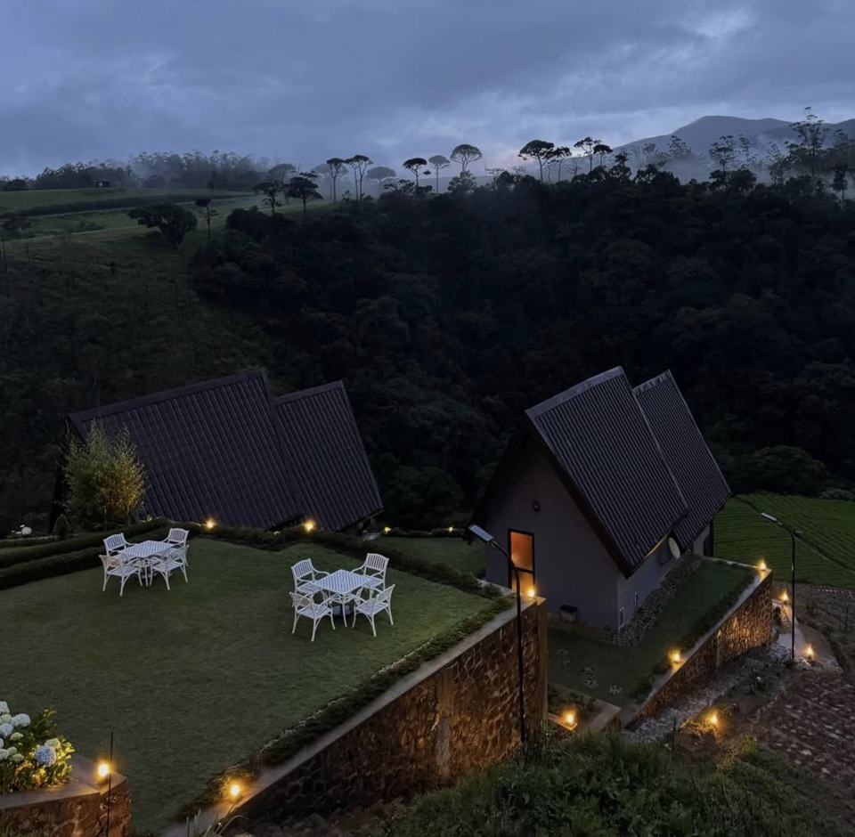
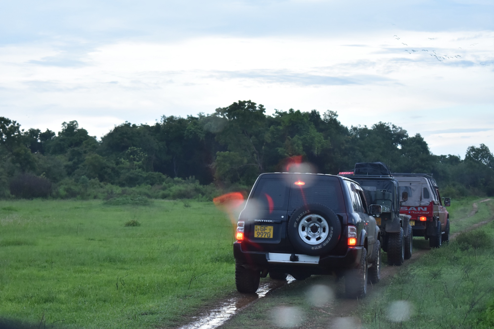
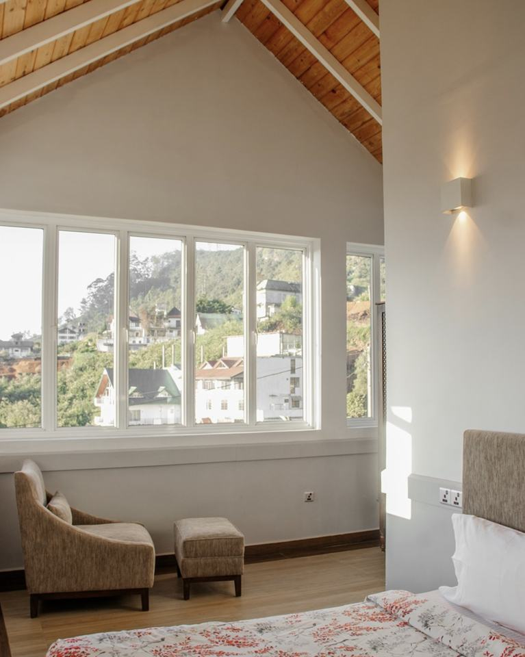

Overnight stay
Bellevue Chalets by Pushella
Ambewela, Sri Lanka


Fixed expedition / Private 4x4
Deraniyagala, Noori, Fishing Hut, Agarapathana, Pattipola, Nuwara Eliya, and the waterfall road back to Colombo.
Route overview
The Central Highlands Backroad Trail is a 4-day private overland journey through Sri Lanka's cooler mountain country, connecting scenic forest roads, tea-estate landscapes, reservoirs, waterfalls, farming villages and classic hill-country towns. Beginning in Colombo, the route leaves the main tourist highway behind and moves towards Deraniyagala, Noori and Eriyadeniya, before reaching the remote highland atmosphere of Fishing Hut.
The first day is built around the gradual transition from the lowlands into the deep central highlands. The drive from Deraniyagala to Eriyadeniya through Noori is one of the most scenic parts of the route, with quiet roads, green valleys, mountain views and rural surroundings. Along the way, guests experience the beauty of Gartmore Tea Estate, Moray Waterfall and the landscapes around Maskeliya Reservoir, before spending the night at Fishing Hut.
On the second day, the journey continues deeper into the highlands through Agarapathana, Kande Ela Reservoir, Ambewela Farm and Pattipola. This section brings a colder, softer and more open side of Sri Lanka, with misty mountain roads, farming landscapes, calm reservoir scenery and highland village life. The overnight stay in Pattipola gives guests a chance to experience one of the highest and coolest inhabited areas in the country.
The third day moves from Pattipola through Ambewela towards Bomburu Ella Waterfall and Nuwara Eliya. This part of the route combines refreshing waterfall scenery, cool-climate landscapes, cultural stops and the familiar charm of Sri Lanka's hill country. Guests visit Bomburu Ella Waterfall, then choose between Hakgala / Malwatta area or Pidurutalagala, depending on preference, timing, weather and access conditions. The day also includes Hakgala Kovil, Seetha Amman Kovil and Gregory Lake, before staying overnight in Nuwara Eliya.
The final day begins with the open landscapes of Moon Plains, one of Nuwara Eliya's most scenic highland viewpoints. From there, the route descends through Sri Lanka's famous waterfall country, passing St. Clair's Falls and Devon Falls before returning to Colombo.
This route is ideal for travellers who want a private highland journey with a balance of hidden roads, tea estates, waterfalls, reservoirs, cool mountain air, farming landscapes and local scenery. It is not a rushed sightseeing tour - it is a carefully paced backroad experience through the quieter and more atmospheric side of Sri Lanka's central highlands.
Route Map
Begin the journey from Colombo, leaving the city behind as the route moves towards Deraniyagala and into the quieter hill-country roads beyond Noori. From Deraniyagala to Eriyadeniya through Noori, the drive becomes one of the most scenic sections of the day, passing through green landscapes, rural surroundings and mountain roads that gradually introduce the atmosphere of the central highlands.
During the day, guests will experience the beauty of Gartmore Tea Estate, where tea-country scenery, misty slopes and open mountain views create a peaceful highland setting. The route also includes Moray Waterfall and the landscapes around Maskeliya Reservoir, giving the day a rich mix of water, tea fields, mountain roads and hidden estate scenery.
The first night is spent at Fishing Hut, a remote and atmospheric highland stay that fits the adventurous character of the route. This day is designed as a gradual transition from the busy lowlands into Sri Lanka's quieter mountain regions, with scenic roads, estate landscapes and natural beauty throughout the journey.

Day two begins from Fishing Hut, continuing deeper into the central highlands towards Agarapathana and Pattipola. This section of the route moves through cool mountain air, changing hill-country landscapes and quiet roads that reveal a softer and more peaceful side of Sri Lanka's interior.
The day includes time around Agarapathana, a region known for its highland atmosphere, tea-country surroundings and scenic mountain roads. From there, the journey continues towards Kande Ela Reservoir, where calm water, pine-lined scenery and cool-climate landscapes create a very different feeling from the lower parts of the island.
Guests will also visit Ambewela Farm, one of the best-known highland farming areas in Sri Lanka. The day ends with an overnight stay in Pattipola, one of the highest and coldest village areas in the country, making it a memorable stop for travellers who want to experience Sri Lanka's mountain climate, rural scenery and highland lifestyle.

Day three begins from Pattipola, continuing through the highland route towards Ambewela, Bomburu Ella Waterfall and Nuwara Eliya. This day brings together some of the most refreshing scenery of the journey, with cool-climate landscapes, waterfall surroundings, mountain roads and the classic atmosphere of Sri Lanka's hill country.
The main natural highlight of the day is Bomburu Ella Waterfall, a beautiful and powerful waterfall surrounded by forested mountain scenery. After this, guests can choose one of the route's optional highland experiences: the Hakgala / Malwatta area or Pidurutalagala, depending on preference, weather, timing and access conditions.
The day also includes visits to Hakgala Kovil, Seetha Amman Kovil and Gregory Lake, adding cultural and scenic variety to the route before staying overnight in Nuwara Eliya. This section is ideal for travellers who want a balanced day of nature, culture, soft adventure and classic hill-country scenery.
The final day begins in Nuwara Eliya, starting with a visit to Moon Plains, one of the best places to experience wide open highland scenery, rolling grassland views and the cool atmosphere of Sri Lanka's hill country. It is a calm and scenic beginning to the last day of the journey.
From Nuwara Eliya, the route continues towards the famous waterfall region, passing St. Clair's Falls and Devon Falls. These two waterfalls bring a strong scenic finish to the route, offering classic hill-country views before the journey gradually descends from the mountains back towards the lowlands.
The day ends with the return drive to Colombo, completing a 4-day journey through forest roads, tea estates, reservoirs, waterfalls, farming landscapes, highland villages and some of Sri Lanka's most beautiful mountain scenery.


A booking deposit is required to confirm the route. The remaining balance can be paid before the trip or on the first day, depending on the agreed booking terms.